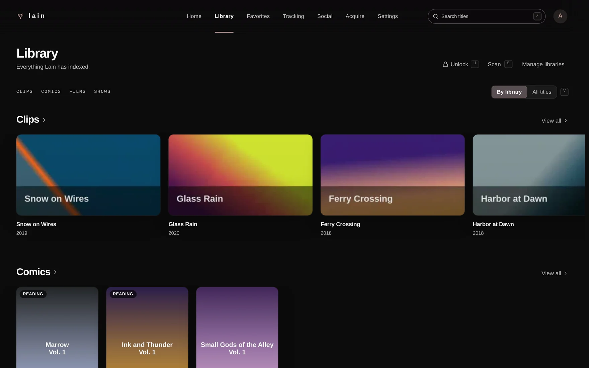
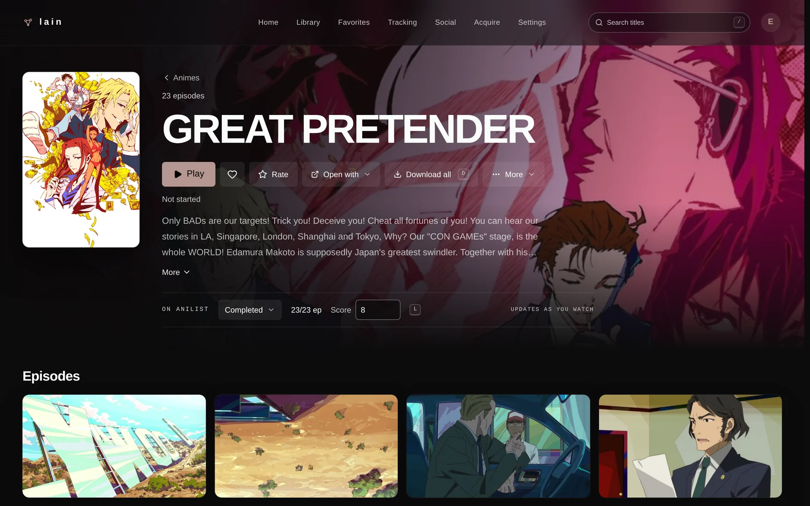
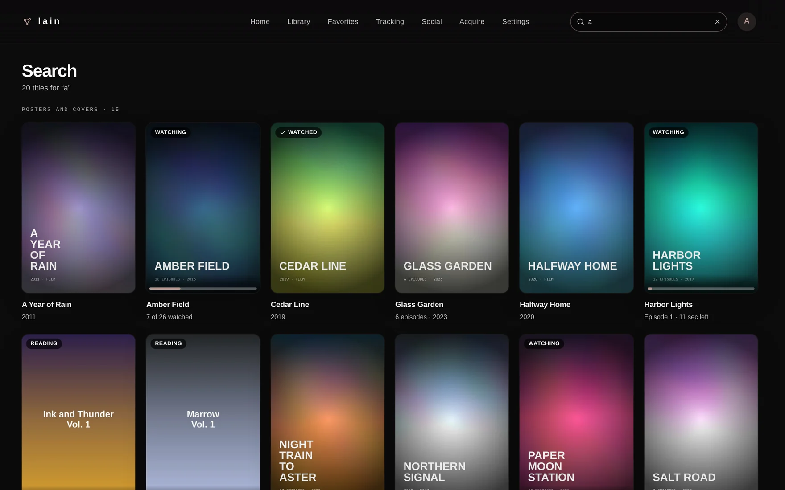
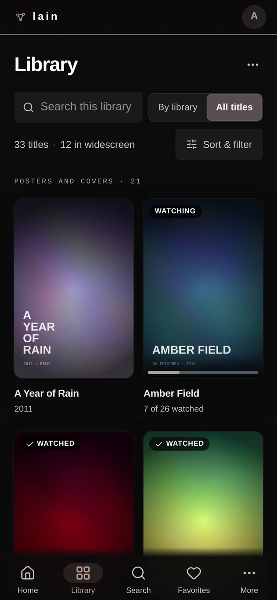

Everything you watch and read.
A self-hosted media server, written in Rust.
One binary. No sign-up, no cloud.
lain is for people who keep their own shelf. Films, shows, anime, comics and manga, read where they already live, served by one 8.7 MB binary. Nothing to sign up for. Nothing between you and your files.
I Library
Titles, not files.
A client you would pick even if it were not yours.



Home
Pick up where you left off.
The next thing to watch is one keyone tap away.
Library
Every title in one calm grid.
Filters say how many they leave.
Title
It opens on the episode you are in.
Your score, your list and your downloads beside it.
Search
Press / anywhere.Search from anywhere.
Results are titles, in the same cards as the library.
Pictures of the phone layout. The live one is in chapter IV.
II Watch
Plays the file as it is.
It converts only when it must, and says why. In the demo, Play has a surprise.
- Hardware transcoding
- NVENC, Quick Sync and VA-API, probed at start.
- HEVC stream copy
- For browsers that decode it. No re-encode.
- HDR tone mapping
- HDR sources are mapped, not refused.
- Anime4K upscaling
- On your GPU or the server's.
- Audio and subtitles apart
- Japanese audio with your subtitles, remembered per title.
- Subtitles without re-encoding
- Any track as WebVTT, extracted on demand.
III Read
Manga and comics, same shelf.
Archives open as books, next to the shows they came from.
- Three ways to read
- Left to right, right to left, or webtoon.
- Spreads
- Two pages at once, with the cover alone.
- Progress per volume
- Continue reading sits on Home, like video.
- Offline copies
- In the browser and in the Android app.
IV Pocket
On every screen you own.
One Rust client core under the browser, the Android app and the CLI.



Web
The same client, sized for a thumb.
Any browser. Nothing to install.
Library
A bottom bar, sheets, big covers.
Laid out for a phone, not shrunk to one.
Tracking
AniList moves as you watch.
Finish an episode or a chapter and the list follows.
Player
The picture over the episode list.
Held upright, the way you hold a phone.
The real client, loading
V Keys
Every action has a key.
And shows it. Press one: this page listens too.On a keyboard, this page listens too.
- /Search
- Ctrl KFind anything
- ?What this screen can do
- JNext
- KPrevious
- DLive demo
- IInstall
- CCopy the command
- EscClose, clear
VI Terminal
The same binary is the client.
Search, play in mpv, keep offline copies, back up. No browser needed.
$ lain watch frieren # search, pick, play in mpv
$ lain watch --next # resume the first unfinished
$ lain download add frieren --rest # offline copies from here on
$ lain doctor # what this machine can do
$ lain backup --out backups # online, consistentVII Core
One process where you had four.
A small trusted core. Everything else is a provider you can replace while it runs.
services:
- video-server: # films, shows, anime
- comic-reader: # manga, with its own accounts
- list-scrobbler: # keeps AniList in step
- download-client: # and a script to move files
+ lain:
+ image: ghcr.io/enrell/lain:latest
+ ports: ["9360:9360"]
+ volumes:
+ - lain-data:/data
+ - ~/Videos:/media/videos- 8.7 MB
- server, web client and CLI
- 1 file
- of data:
lain.redb - 0 accounts
- outside your own server
- 5 targets
- Linux, macOS, Windows
- Local first
- Files are read in place. Nothing is copied, moved or uploaded.
- Providers, not a monolith
POST /api/plugins/swap, with the last good one as fallback.- An API with a spec
- Every route is a conformance case. Errors are typed.
- Built to be kept
- Online backups, checksums, build attestations.
- For a household
- Accounts with their own progress, scores and limits.
- Private libraries
- Local metadata only, behind a PIN.
Before you install
What lain is not.
- No music, audiobooks, photos or live TV
- Video and reading, on purpose.
- No iOS or TV app
- Web, Android and the CLI. Desktop is being built.
- No PDF
- CBZ by itself; CBR and CB7 with
bsdtaror7z. - No ffmpeg inside
- It runs beside lain; the Docker image brings it.
- Young
- v0.3 and moving fast. Read the changelog.
VIII Install
Running in a minute.
Open http://localhost:9360, create the first account, point lain at a folder.
The image runs on amd64 and arm64 and brings ffmpeg with it.
docker run -d --name lain \
-p 9360:9360 \
-v lain-data:/data \
-v ~/Videos:/media/videos \
ghcr.io/enrell/lain:latestThe same container as a compose file. Add a volume per media folder.
services:
lain:
image: ghcr.io/enrell/lain:latest
ports: ["9360:9360"]
volumes:
- lain-data:/data
- ~/Videos:/media/videos
restart: unless-stopped
volumes:
lain-data:An interactive script: Docker, a static binary or a user service, your media folders, the port. It prints what it will do before doing it, and the same script uninstalls.
curl -fsSL https://raw.githubusercontent.com/enrell/lain/main/scripts/install.sh | bashOne static file for Linux, macOS and Windows, with the web client inside. Each archive ships with its SHA-256. Put it on your path and run it.
lain serve # http://localhost:9360
lain service install # or keep it running as a user serviceEvery release carries a signed APK. Install it, type your server's address, sign in. Point Obtainium at the repository to follow updates.
Latest release: v0.3.1, 12 Nov 2026. Apache-2.0, checksums and build attestations on every artifact.
Your media.
Your machine.
Your rules.